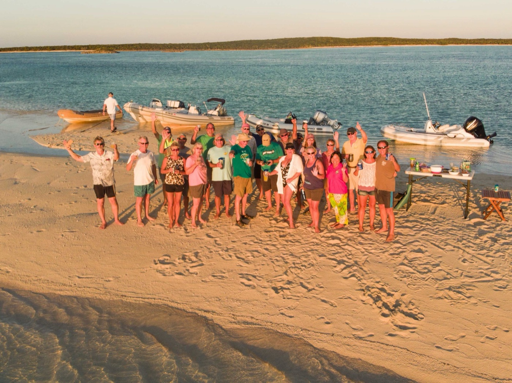
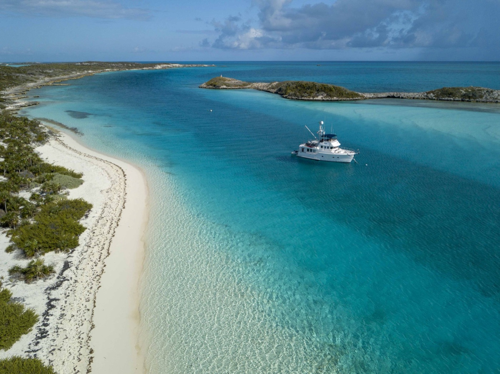
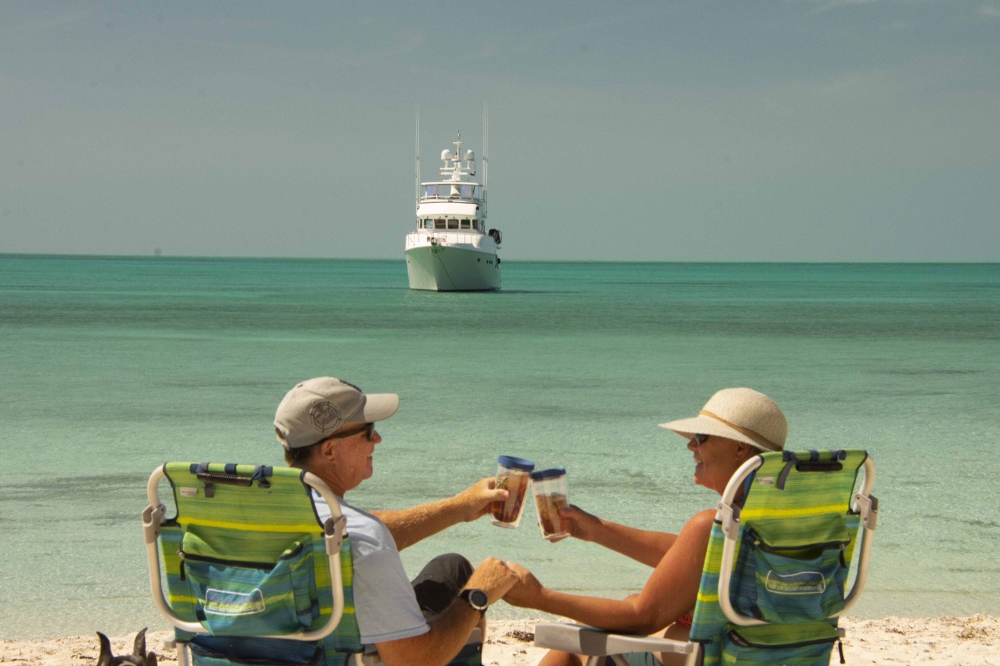

How a week on a boat can change everything you think you know about what matters
There's a moment, usually somewhere between the third anchorage and the first genuine sunset, when you realize that everything you left behind on the mainland doesn't matter nearly as much as you thought it did.

I've taken clients, friends, and family to the Abacos more times than I can count. Almost without exception, they leave transformed. Not because the Bahamas is some magical place, though it is beautiful. Because the slow life of boat living strips away the noise and shows you what actually matters.
The Noise Stops
Out on the water, your phone probably doesn't work. The meetings you thought were critical? They'll happen without you. The emails that felt urgent? They can wait. Something strange happens when you realize the world doesn't actually need you to respond immediately to everything.
You start to breathe differently. The constant low-level anxiety most of us carry, the sense that we're forgetting something or falling behind, it just evaporates. Out there, there's nothing to fall behind on. Nowhere to be except exactly where you are.
That experience alone is worth the trip. But it's not really what changes you.
You See What Matters
When you're floating at anchor in a quiet cay with people you care about, something shifts. Maybe you're snorkeling in water so clear you can see thirty feet down. Maybe you're sitting on deck at sunset with a drink and a friend you haven't had an uninterrupted conversation with in years. Maybe you're just watching the water and thinking about nothing in particular.

These moments, which seem small while you're living them, become the ones you remember. Not the deals you closed or the meetings you nailed. The sunsets. The conversations. The laughter. The time with the people who matter to you, with nothing else competing for attention.
That's when most people get it. They understand, in a visceral way rather than an intellectual one, what a lot of us have been saying all along: the things we chase on land, the promotions, the bigger house, the status, they're not what fills you up. Connection does. Presence does. Beauty does. Time with people you love does.
It Changes How You Think About Priorities
Here's what I've noticed: people who spend a week or two in the Abacos, really spending it, anchored down, no internet, no plans beyond where to go tomorrow, they come back different. Not dramatically different. But noticeably.
They start protecting their time differently. They say "no" to things that don't serve them. They make more time for people. They stop sweating the small stuff. They realize the Sunday night dread they used to feel, the anxiety about the week ahead, was optional. They chose it, and they can choose differently.
Some of them decide they want more of this. They buy boats. They plan extended cruises. They commit to spending more time on the water. Others just go home and live their lives differently, taking a week off here, protecting their weekends there, having more real conversations with the people in their lives.
The ones who really got it start asking bigger questions. They wonder if their current life is actually what they want, or just what they fell into.

It Doesn't Take Long
The thing that surprised me most when I started cruising? You don't need months. You don't even need weeks. I've seen people experience a genuine shift in perspective in just four or five days.
By day three, they're already sleeping better. By day five, they're having the kind of conversations that matter. By the time they head back to the mainland, they've felt something shift inside them.
That's why I love talking with potential boat buyers about what they want from their time on the water. If you really want to know what someone values, take them to an anchorage and ask them what their perfect day looks like. Is it diving? Fishing? Cooking with friends? Reading? Doing absolutely nothing? The answer tells you everything about what will actually make them happy.
More often than not, it has nothing to do with how big the boat is or how many systems it has. It has to do with who they'll be with, where they'll be, and whether they've given themselves permission to slow down and be present.
The Abacos Taught Me Something
I've been cruising for a lot of years now. What the Abacos has taught me, what I see over and over again in the faces of people anchored in Marsh Harbour or Man O' War or the Exumas, is that we all want the same thing.

We want to matter. We want to be present with people we care about. We want to witness beautiful things. We want our time to feel meaningful.
The Bahamas didn't invent these things. But it has a way of bringing them into focus. It strips away the distractions and shows you what you're actually made of. It reminds you what you really value.
Once you've seen it, once you've felt what it's like to live that way, even for a few days, you can never completely unsee it. You can't go back to the old way of prioritizing time. You just figure out how to bring more of that feeling into your regular life.
That's the real gift of a simple trip to the Abacos. Not the snorkeling or the scenery, as good as those are. It's the permission to remember what actually matters.
And once you remember? Everything changes.